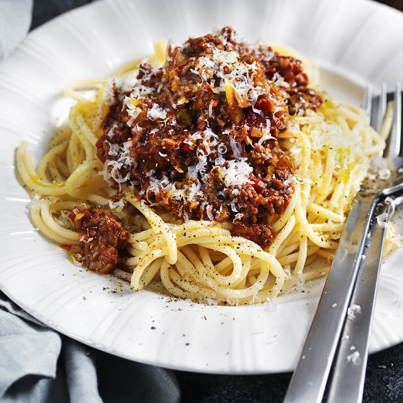

En klassisk köttfärssås med bland annat oregano, vitlök och lite grädde! Kan serveras tillsammans med pasta
och passar alla åldrar. Tillagningstid runt 25 minuter.

Ingredienser
500 g nötfärs
1 msk olivolja
1 hackad gul lök
2 rivna vitlöksklyftor
400 g krossade tomater
1 grönsaksbuljongtärning
1 tsk torkad oregano
0,5 tsk peppar
0,5 dl grädde
1 tsk salt
Instruktioner
Stek lök, vitlök och färs i olja i en het stekpanna under omrörning.
Tillsätt krossade tomater, grädde, buljong och oregano i pannan.